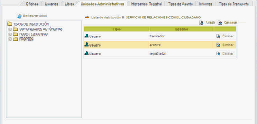

Para visualizar la lista de distribución asignada una unidad administrativa, pulse sobre el icono  Lista de distribución
y se visualizará un listado con los usuarios, departamentos o grupos que forman parte de esta lista. Aparecerán los siguientes datos: Lista de distribución
y se visualizará un listado con los usuarios, departamentos o grupos que forman parte de esta lista. Aparecerán los siguientes datos:
- Tipo: Existen tres tipos: usuarios, departamentos o grupos
- Destino: Corresponde al nombre del usuario, departamento o grupo asignado a la lista
- Eliminar: Opción que permite desasociar una lista de distribución de la unidad administrativa

Podrá añadir una la lista de distribución pulsando sobre la opción  Añadir o bien cancelar la operación y volver al listado
de unidades pulsando en el botón Añadir o bien cancelar la operación y volver al listado
de unidades pulsando en el botón  Cancelar. Si se pulsa la primera opción se abrirá una nueva ventana donde se
cargarán los departamentos y grupos y pulsando sobre ellos los usuarios que pertenecen a ese departamento o grupo. Cancelar. Si se pulsa la primera opción se abrirá una nueva ventana donde se
cargarán los departamentos y grupos y pulsando sobre ellos los usuarios que pertenecen a ese departamento o grupo.

Seleccione el departamento o grupo que quiere incorporar en la lista de distribución y pulse Guardar o bien haga doble click sobre él.
Si desea algún usuario concreto, elija el departamento o grupo al que pertenece
y, después en la lista de la derecha, selecciónelo y pulse "Guardar" o haga doble click sobre él.
El botón Cancelar cerrará la ventana y anulará la operación.
|